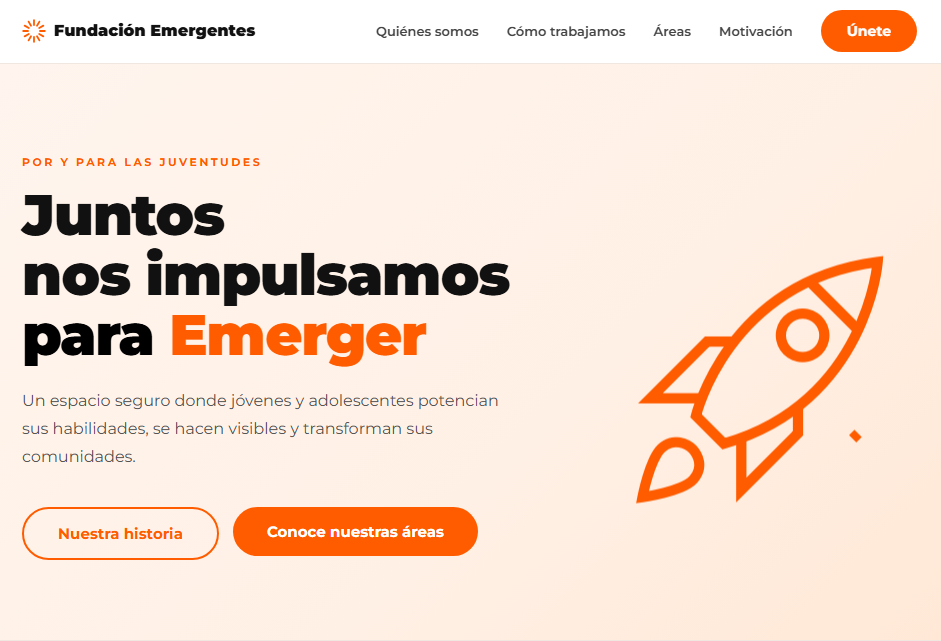

Portfolio
Desarrollador Web. Construyo interfaces cuidadas, con la misma atención al detalle que pondría en un proyecto propio.
Sobre mí
Soy Mauricio Sena, desarrollador Freelancer y estudiante de informatica enfocado en construir experiencias web prolijas, rápidas y con identidad propia. Me gusta que cada proyecto este bien pensado y tenga una razón de ser.
Vengo trabajando principalmente con landing pages, y estoy en proceso de sumar proyectos más complejos a mi portfolio, este sitio es, de hecho, el primero de esa nueva etapa.
Soy fan de los detalles: una transición bien pensada, una paleta coherente, un micro-interacción que cuenta algo.
Proyectos
Acá va a vivir el primer proyecto que vaya más allá de una landing page. En construcción.
en progreso
Sitio web institucional para una fundación enfocada en potenciar a jóvenes y adolescentes.
en líneaTodavía sin definir. Si querés ver trabajo previo en landing pages, escribime y te paso ejemplos.
por definirContacto
Si tenés un proyecto en mente, escribime por cualquiera de estos medios.